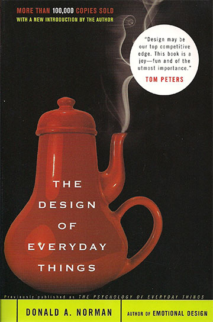
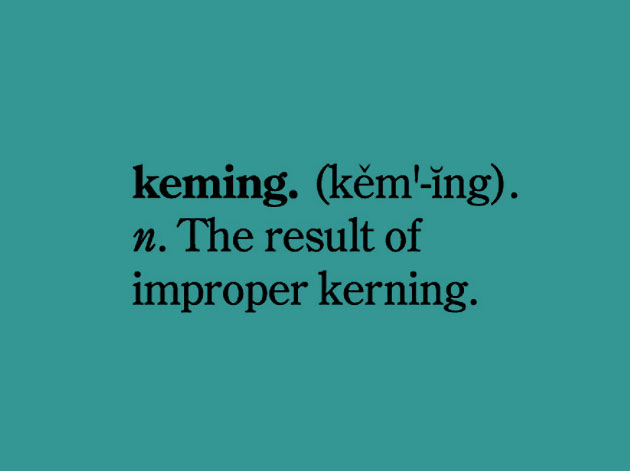

Design & Presentation
CUNY J-School Spring 2014 | Thurs 6-8:50 | Room 438 | Lena Groeger
This course will cover the fundamentals of good presentation, layout, and design for print and the web. We'll cover basic typography, color theory, page layout, information design as well as navigation and usability. We'll explore a variety of online tools, get comfortable with Adobe Photoshop and Illustrator and introduce the languages of web design: HTML and CSS. By the end of this course you'll be able to recognize poor designs and identify how to fix them, as well as create your own designs with better organization, unity, and clarity.
 Henryk Tomaszewski, Moore, 1959
Henryk Tomaszewski, Moore, 1959
CLASS ONE | Thursday, May 1st | 6-8:50
Basic Design Principles
The things you need to keep in mind for every single project, from poster to news graphic.
In Class
We'll cover the four basic design principles to live by (at the end of this class you'll be very very very familiar with them.) They come straight from one of my all-time favorite design books, The Non- Designers Design Book by Robin Williams (not the actor). We'll look at examples from print and online, inside and out of the newsroom, big and small, festive and serious. We'll also do some in class design exercises and critiques to get you thinking about why — and how — design can be used to better organize, unify, and present your ideas.
The Non-Designer's Design Book
1. Proximity p 15-32
2. Alignment p 33-50
3. Repetition p 51-64
4. Contrast p 65-60
After Class
Do this:
Take a resume (preferably your own). Applying the four design principles we talked about today, redesign that resume. Send it to me before next week's class.
Read this:
Clean Up Your Mess: A Guide to Visual Design for Everyone
Design Principles for News Apps and Graphics
A 20 Minute Intro to Typography Basics
Thinking with Type (there's a ton here, it's mostly meant as a resource to skim through. Focus on the sections about letter and text.)
Bring this:
One example of a design that you like (or hate)... it could be a website, a magazine, a poster, or anything else. Come prepared to talk about why you like it (or don't), and what design principles it uses (or doesn't use).
CLASS TWO | Thursday, May 8th | 5-7:50
Type, Color, and The Grid
How to organize the bits and pieces of any design— typefaces, colors, words, pictures, columns, units, etc — to create a unifed whole. Plus an introduction to Illustrator.

In Class
We'll talk about how good typography and organized layouts can help you build better designs that inform, inspire, entertain and above all, communicate ideas clearly. We'll cover the basics of type classification (you know, the serif and sans-serif stuff), talk about some do's and don'ts of font choices and combinations, and review bits of Thinking with Type by Ellen Lupton.

Thinking with Type
Type Classification/Families p 42-47
Screen Fonts p 55
Kerning/Tracking/Line Spacing/Alignment p 80-85
Hierarchy p 94-95
We'll talk a little bit about color theory and how to pick color schemes (with a few online tools its not too hard to find gorgeous and informative color combinations). One of the best places to start is Color Brewer by Cynthia Brewer. We'll also delve into a very practical idea and technique for building great designs: the grid. We'll talk about units, columns and thirds, and how to go about translating those grids from paper to the web. We'll look at lots of examples from the Layout Workbook by Kristin Cullen.
Layout Workbook
Grid Systems p 54 - 71
Composition p 77-87
Designing with Type p 98-115
To try it all out, we're gonna jump right into grid-based design in Adobe Illustrator. Download this introductory tutorial from BGSU and this Illustrator file to get started. Here is a more detailed explanation of Illustrator tools.
After Class
Do this:
Using the Illustrator tools we covered in class, re-create this as best you possibly can (hint: start by breaking it up into lines, squares, and text-boxes, and repeat). It's actually the homepage of designer Khoi Vinh, who relied heavily on a grid-based system for his website, and talks about grids often.
{kind=link}
Watch this:
Get introduced to HTML and CSS! Watch Part 2-6 of the Don't Fear the Internet video series. If you've got the basics down already, take a stab at recreating the design you just made in Illustrator into an actual web page.
Send me this:
1 to 2 ideas for your final project. Remember this can be a new project (I'd highly recommend building yourself an online portfolio if you don't already have one) or a project that you've been assigned in another class that could benefit from a design overhaul.
More resources/articles
Clearview: The Road to Clarity
The Art & Science of Communicating through Type
Five simple steps to better typography
Designing With Grid-Based Approach
CLASS THREE | Thursday, May 15th | 6-8:50
Design for the Web
How to structure and style any webpage with HTML and CSS. Plus a review of Illustrator for those who want more practice, and a few cool tricks with Photoshop.
Before CLASS
Make sure you have the following:
A text editor like TextWrangler (free), TextMate or Sublime Text
A Dropbox account
The latest version of Chrome
In CLASS
We're going to jump right into how to structure and style webpages with HTML and CSS. We'll review the basics so you're comfortable with everything from <p> tags to CSS classes. Then we'll create our very own web page from scratch.
HTML
Tags & Attributes
Classes & Id's
CSS
Selectors
Inheritance & Specificity
External Stylesheets
We'll meet the web inspector, which is basically like viewing the source code of a web page but much more awesome. We'll fiddle around with some existing web pages to alter some text, change styles and find image url's or raw data. Finally, we'll use Adobe Photoshop to do some image correction and created optimized images for the web.

Web Inspector
Raw Source Code
The DOM
Manipulating Styles
Finding Files, Images and Data
Exercises
Meet Your Web Inspector (we'll be using this awesome tutorial from journo-developer Dan Nguyen)
After Class
Reading: As an introduction to usability & interaction design, read this short article: Affordances in Graphic Design, by Donald Norman
Resources/articles
Intro to Web Fundamentals by Scott Murray
The 30 CSS Selectors you Must Memorize
CLASS FOUR | Monday, May 19th | 5-7:50
Interaction Design, Usability & Navigation
How to approach design from the user's perspective.
IN Class
We'll talk about how to create clear and intuitive designs for better user experiences. We'll focus on the basics: how to convey the basic idea of a page (what is this?), orient the user (where am I?), and make sure functions are self-evident (what do I do here?). We'll cover some common mistakes to avoid and a few easy steps to ensure usable interfaces and good navigation.
We'll start with some principles from a must-read book for anyone who deals with design and technology in the world (or has trouble opening doors): The Design of Everyday Things by Donald Norman. I promise that in addition to doors, you will never look at stovetops or teapots the same way.
The Design of Everyday Things
Having a Good Conceptual Model
Visibility
Mapping
Feedback
We'll talk about the value in signposts and breadcrumbs, how to use visual hierarchy to tell users the big idea, and why you should probably stick to conventions (something about a wheel and re-inventing). We'll look at some examples from something more web-specific: Don't Make Me Think by Steve Krug.
Don't Make me Think
Billboard Design 101
Omit Needless Words
Street Signs & Breadcrumbs
After Class
Keep working on your projects. If it's a print project in Illustrator, Photoshop or InDesign, think about how to get as far as you can with just the simple tools we talked about. You can go far with just the rectangle and type tool! If it's an online project or portfolio, think about how users will navigate between elements smoothly (will they scroll? click through?) Think about what you want users to see first and how you want to display your work (all at once? in a slideshow?). Try applying each of the 4 design principles in turn, consider font choices and color, and think about how to make interactions simple and intuitive.
Resources/Articles
Interdisciplinary Interaction Design by James Pannafino
CLASS FIVE | Tuesday, May 20th | 6-8:50
Information Graphics, Data Visualization & Final Projects
How to design with data.
IN CLASS
We'll go on a quick tour of how to approach the visual display of information, from how to pick the right chart form to what it means to "tell a story" with data anyways (hint: lots of smart people disagree). The rest of the time we'll work on final projects.
AFTER CLASS
Send me your final projects. And that's it! Congrats on completing Design & Presentation. Best of luck in your future designs, and may improper kerning forever annoy you.

Resources/Articles
Data Processing:
Free & Cheap Tools for Wrangling Data
Scraping guide from the Propublica nerds
Extract an HTML table to Google Docs
Data Visualization Blogs & Tools
POLICIES & STUFF

Grading
You'll be graded on the following components:
- 50% Homework Assignments/Readings
- 25% Class Participation
- 25% Final Project
Final Project
By the end of this course, you'll each use all of these principles and tools to:
- Create a personal portfolio site
- Design a new information graphic, visualization, or multimedia presentation
- Completely redesign an existing project
- Or, talk to me about another idea you have for a final project
Contact
Feel free to contact me at any time by email. I'll also be available for office hours by appointment.